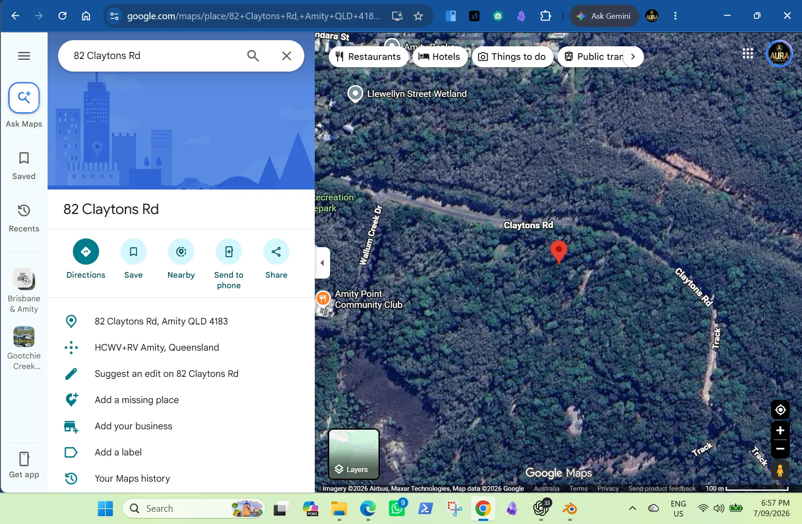
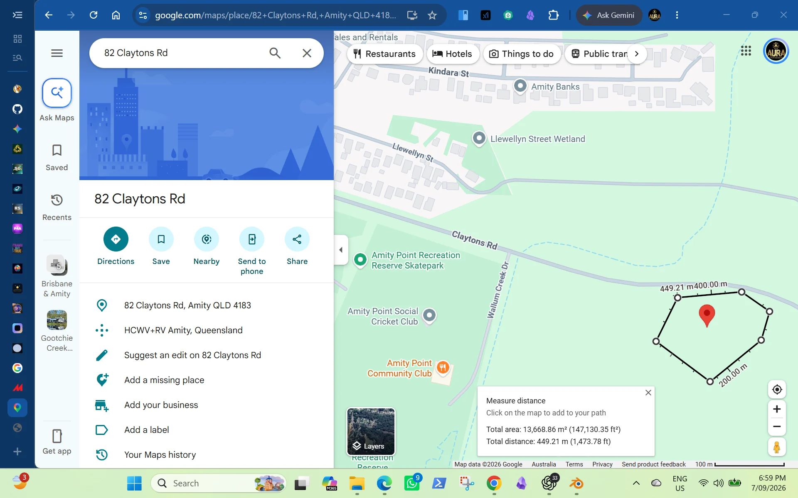

GenAI concept artwork
GenAI concept artworkThe invitation to the Diocese
I ask Anglican Church Southern Queensland to gift 82 Claytons Road, Amity, to a community fund to be established, provisionally called the Straddie Sovereign Wealth Fund, and to help shape a partnership for dementia support, aged care and longevity research. The fund would hold land and other assets for lasting island benefit. The partnership would bring that purpose to life through people, services, learning and discovery.
This is an opportunity to connect the Church's tradition of service with an urgent question: how do we help people live well as they age, while ensuring that extraordinary advances in technology strengthen human relationships and opportunity?
A gift carried forward
My paid title search confirmed that 82 Claytons Road is owned by The Corporation of the Synod of the Diocese of Brisbane. The property research identifies it as Lot 23 on SL3665. [1]
The Diocese's own published history records that St Peter's Church moved in 1997 onto land at Amity bequeathed for aged care. The intended care facility did not eventuate. That recorded generosity gives this invitation a powerful starting point: a place intended for care could inspire a new chapter of service to older people, their families and the wider community. The original donor records can guide how that intention is honoured. [1]
I invite the Diocese to consider this proposal in the spirit of reciprocity: generosity carried forward through useful work, lasting relationships and benefits shared across generations.

The property
Supplied satellite and working measurement images of 82 Claytons Road beside Claytons Road, Amity. Select either image to view it at full size.
{kind=link}

{kind=link}

Why an Anglican partnership matters
The Church brings more than property. It brings a long tradition of pastoral care, community connection and reflection on what gives a life meaning. Its experience, together with the capabilities of Anglicare and other willing care partners, could help shape a project in which innovation remains close to the people it is meant to serve. [2]
The partnership could connect a carer seeking help today with researchers asking longer-term questions, and an older resident's knowledge with a young person's energy and curiosity. Faith, science and community experience each have something valuable to contribute.

What the gift makes possible
A lasting home gives people a reason to organise around a shared purpose. Care providers could shape services, researchers could develop studies, philanthropists could support useful work, and local people could help decide what matters most. The property becomes the foundation for a community institution with a life beyond any single device or project.
My contribution is the vision, the project development to date and the work of bringing people together. I am seeking the Diocese's interest and partners who can contribute the expertise, practical help and resources to develop it.